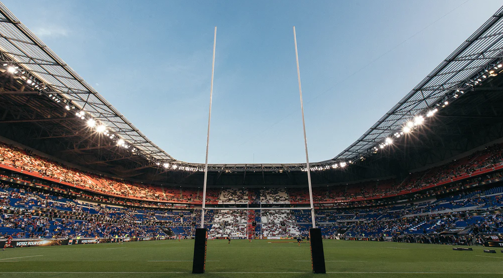

|
|
LIGAS
RUGBY UNION:
Objetivo do Jogo:
O objetivo do rugby union é marcar pontos ao cruzar a linha de gol adversária e aterrissar a bola no chão (try) ou chutar a bola entre os postes (conversão, penalidade ou drop goal). Times:
Cada equipe é composta por 15 jogadores em campo ao mesmo tempo, divididos em forwards (oito jogadores) e backs (sete jogadores). Scrum:
O jogo começa com uma scrum, onde os forwards de ambas as equipes se alinham e empurram para disputar a posse da bola. Lineout:
Quando a bola sai dos limites do campo, é reinserida no jogo através de um lineout, onde jogadores se levantam para pegar a bola lançada por um companheiro de equipe. Rucks e Mauls:
Após um tackle, os jogadores se agrupam e empurram para disputar a posse da bola em rucks e mauls. Pontos:
Um try vale cinco pontos, uma conversão dois pontos, um penalidade ou drop goal valem três pontos cada.

RUGBY LEAGUE:
Objetivo do Jogo:
O rugby league também envolve marcar pontos ao cruzar a linha de gol adversária, mas há algumas diferenças. No rugby league, os tries valem quatro pontos, a conversão dois pontos e o chute de penalidade ou drop goal vale um ponto. Times:
Cada equipe de rugby league consiste em 13 jogadores em campo. Tackles:
No rugby league, após um tackle, a equipe atacante tem um número limitado de tackles para avançar em direção à linha de gol adversária. Isso cria um jogo mais rápido e dinâmico. Play the Ball:
Em vez de rucks e mauls, o jogador que é derrubado no rugby league deve "play the ball" (rolar a bola com o pé) para reiniciar o jogo. Scrums de Marcação:
O rugby league usa scrums de marcação para reiniciar o jogo após certas infrações.
|
|